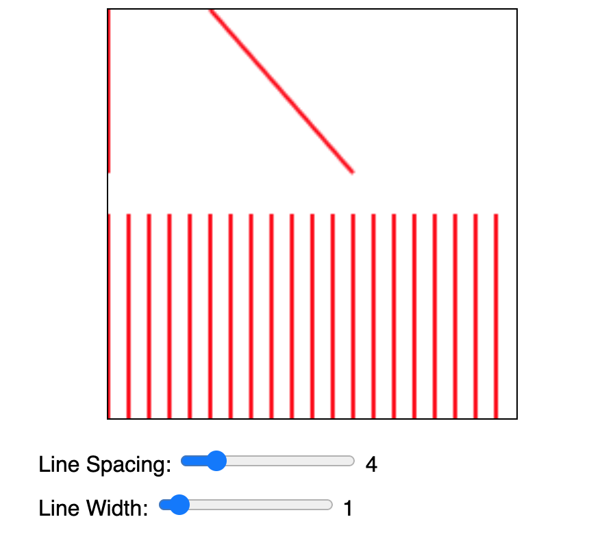
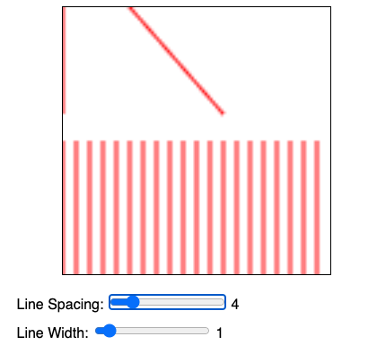
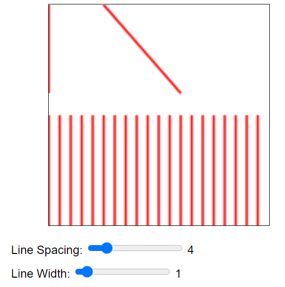

Your operating system and browser can provide your code with your “Device Pixel Ratio”. I have read that this number is useful when working with high resolution displays that actually can draw things at half-pixels. Your browser's current DPR is: unknown (refresh with the window on a different screen to update).
The width and height of the canvas below is 100 * DPR. On a high resolution DPR 2 display (like an Apple “retina” display) you should see crisp lines, on a standard DPR 1 display you should see the same blurry lines (screenshots below.)
canvas.width = 100 * dpr;
canvas.height = 100 * dpr;
ctx.scale(dpr, dpr);


